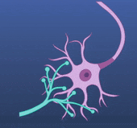
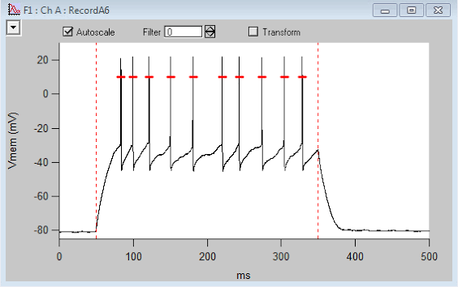
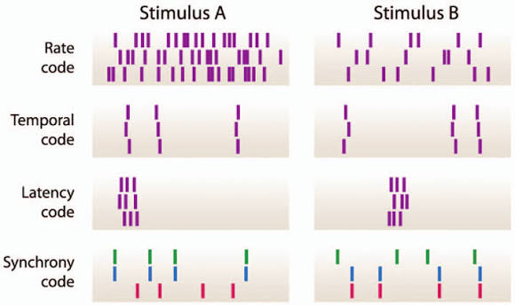
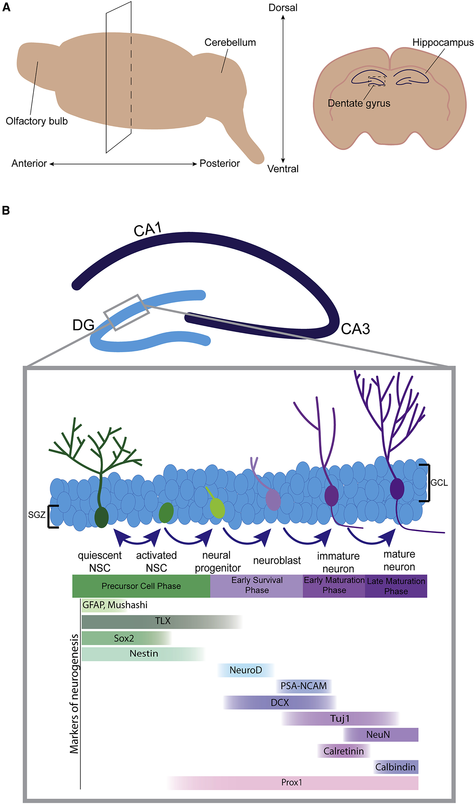
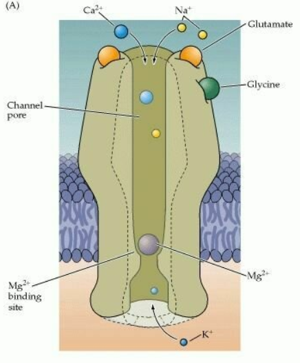
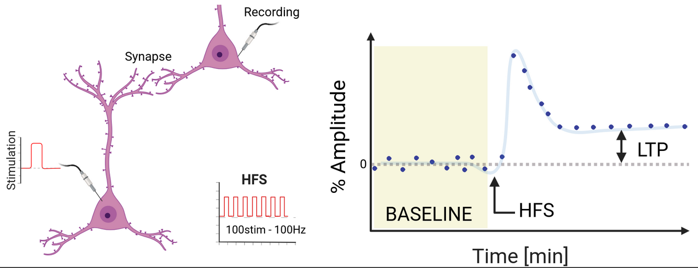
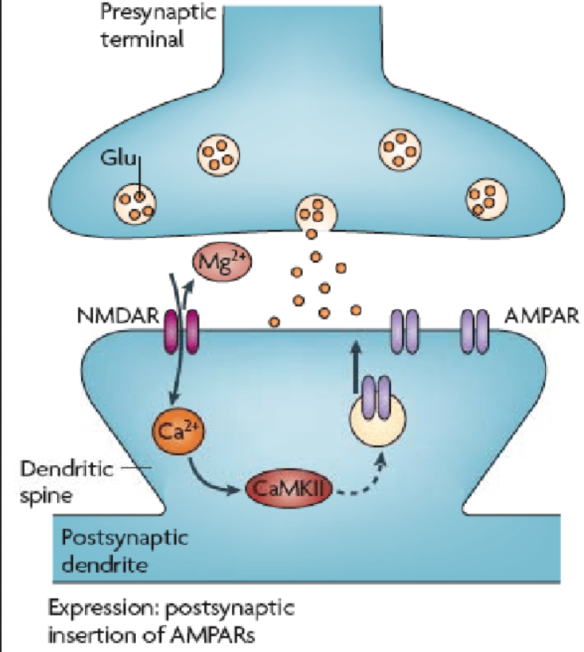
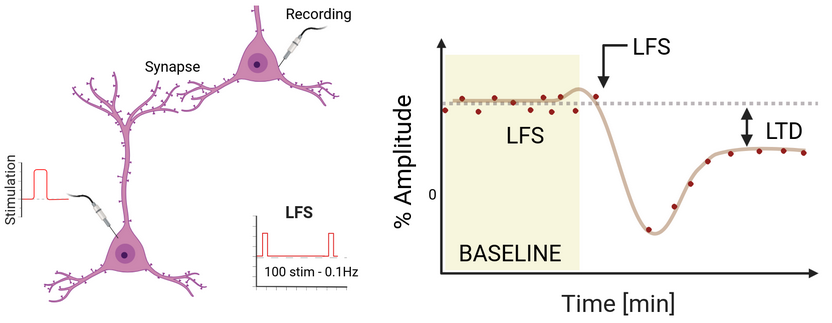
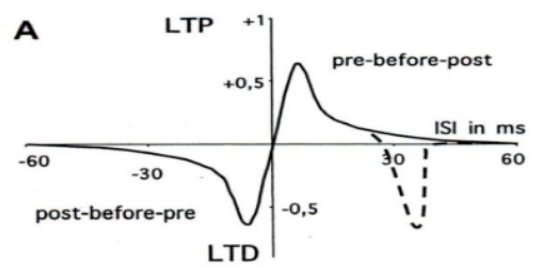

Neuroplasticity
How experience reshapes neural circuits
Scuola di Psicologia, University of Florence
Neuroplasticity
Neuroplasticity is the capacity of neurons and neural circuits to change their function or structure in response to activity and experience.
Plasticity is fundamental for:
- adaptation to the environment
- learning and memory
- development of neural circuits
- recovery and reorganization after injury

Plastic changes can be primarily:
functional: changing how strongly or when neurons communicate
structural: changing synapses, dendrites, axons or, in restricted contexts, neuron number
Plasticity acts on different timescales
Neural systems can change on timescales ranging from milliseconds to years.
Fast
Duration: milliseconds to seconds
Mostly functional
Examples: rapid changes in synaptic efficacy
Transient
Duration: seconds to minutes
Mostly functional
Examples: short-term plasticity, adaptation, working-memory-related changes
Long-lasting
Duration: hours to months or years
Initially functional, but can become structural
Examples: learning and long-term memory
Neural representations can change
Plasticity does not necessarily require a visible anatomical change.
A circuit can change by modifying the pattern of activity used to represent information.
Information can be represented through:
- neuronal
firing rate - precise
spike timing - temporal patterns of activity
- distributed
population activity
After learning, the same stimulus or action can therefore evoke a different neural representation.


Forms of neuroplasticity
Synaptic plasticity - Functional
Changes in the efficacy of communication between neurons.
It can involve:
- strengthening
- weakening
existing synapses.
Structural plasticity - Structural
Changes in the physical organization of circuits.
- formation of new synaptic contacts
- elimination of existing contacts
Adult Neurogenesis
Formation of new neurons:
- in restricted neurogenic niches
Functional and structural plasticity are not independent: persistent functional changes can eventually become structurally stabilized.
Adult neurogenesis: a restricted form of plasticity
In the adult brain, the generation of new neurons is highly restricted compared with development.
Adult neurogenesis is robustly established in specific neurogenic regions in many mammals, especially the granular layer of the dentate gyrus of the hippocampus.
Recent evidence also supports persistent hippocampal neurogenesis in adult humans, although its magnitude and functional contribution remain active areas of research.
There is no evidence for widespread adult neurogenesis throughout the cerebral cortex.

Hebbian principle
In 1949, Donald Hebb proposed a theoretical principle linking learning to changes in synaptic strength.
If activity in a presynaptic neuron repeatedly contributes to activation of a postsynaptic neuron, the connection between them tends to strengthen.
The central idea is therefore correlation:
the synapse changes according to the relationship between presynaptic and postsynaptic activity.
Fire together, wire together
A synapse must detect coincidence
Hebbian plasticity requires a mechanism capable of detecting when presynaptic activity and postsynaptic activation occur together.
At many excitatory synapses, the NMDA receptor provides such a mechanism.
Presynaptic activity
Glutamate is released and binds NMDA receptors.
Postsynaptic depolarization
Depolarization removes the voltage-dependent Mg²⁺ block.
Coincidence
When both conditions occur, NMDA receptors conduct Ca²⁺, triggering intracellular plasticity mechanisms.
NMDA receptors as coincidence detectors
Glutamate only
NMDA receptor is ligand-bound, but the Mg²⁺ block strongly limits current at resting membrane potentials.
Depolarization only
The Mg²⁺ block can be relieved, but without glutamate the receptor does not open.
Glutamate + depolarization
The channel opens and Ca²⁺ enters the postsynaptic cell.

The resulting Ca²⁺ signal can initiate biochemical pathways that modify synaptic strength.
LTP and LTD
Long-Term Potentiation (LTP)
A persistent increase in synaptic efficacy following an appropriate pattern of activity.
Long-Term Depression (LTD)
A persistent decrease in synaptic efficacy following an appropriate pattern of activity.
LTP and LTD provide experimental models for studying how activity can produce persistent changes in synaptic strength.
The classic work of Bliss and Lømo (1973) demonstrated long-lasting potentiation in the hippocampal formation after patterned stimulation.
Measuring synaptic potentiation

Experimental induction of LTP
Baseline
A test stimulus is repeatedly delivered and the postsynaptic response is measured.
Induction
A pattern of stronger or coordinated activity is delivered to the pathway.
Result
The same test stimulus subsequently produces a larger postsynaptic response that can persist long after induction.
Early mechanisms of LTP
The earliest phase of potentiation can occur rapidly and does not initially require the formation of a new synapse.
At many glutamatergic synapses:
NMDA receptor activation:
Ca²⁺ influxactivation of intracellular kinases
increased function and rapid insertion of
AMPA receptors
The existing synapse therefore becomes more effective at converting glutamate release into a postsynaptic response.

LTD can weaken an existing synapse

Plasticity must also allow synapses to become weaker.
The same amount of presynaptic glutamate release then produces a smaller postsynaptic response.
In many forms of glutamatergic LTD, intracellular signaling promotes the removal (internalization) or reduced function of postsynaptic AMPA receptors.
LTP & LTD game
Timing also matters
Hebbian plasticity is not determined only by whether two neurons are active.
The relative timing of presynaptic and postsynaptic activity can also determine the direction of plasticity.
This principle is called spike-timing-dependent plasticity (STDP).
Pre before post
At many synapses, presynaptic activity shortly before postsynaptic firing favors potentiation.
Post before pre
At many synapses, the reverse order favors depression.
The precise timing rules and time windows vary across synapses and circuits.
Spike-timing-dependent plasticity
STDP converts temporal relationships between neurons into long-lasting changes in synaptic efficacy.
A synapse that consistently helps drive the postsynaptic neuron can become stronger.
A synapse whose activity is poorly timed relative to postsynaptic firing can become weaker.

From early plasticity to consolidation
A rapidly induced synaptic change is not necessarily permanent.
Early phase
- modification of existing proteins
- receptor trafficking
- changes in synaptic efficacy
- primarily functional
Consolidated / late phase
- altered gene transcription
- new protein synthesis
- stabilization of receptor changes
- spine remodeling
- formation or elimination of synaptic contacts
Long-lasting plasticity can therefore progress from functional modification to structural stabilization.
Structural plasticity
Long-lasting changes in experience can remodel the physical structure of neural circuits.
Structural plasticity can include:
- formation of new dendritic spines
- stabilization of selected spines
- elimination of existing spines
- axonal sprouting
- formation of new synaptic contacts
The circuit is therefore not anatomically fixed after development.
Image: repeated two-photon imaging of dendritic spines showing stable, newly formed and eliminated spines
Suggested file: images/5_np_spine_turnover.png
The plasticity-stability dilemma
Pure Hebbian plasticity contains a potential instability.
If strong synapses are repeatedly strengthened because they are effective, they become even more likely to drive postsynaptic firing.
Weak synapses may become progressively less effective.
Without additional regulatory mechanisms, this positive feedback could push network activity toward runaway excitation or excessive silencing.
A useful nervous system must therefore be both:
plastic enough to learn
and
stable enough to remain functional
Homeostatic plasticity
Homeostatic plasticity regulates neural excitability so that activity remains within a functional range.
If a neuron remains too inactive, synaptic drive can be increased.
If it remains too active, synaptic drive can be reduced.
Unlike Hebbian plasticity, the goal is not to select the most correlated input.
The goal is to stabilize overall activity.
Image: homeostatic regulation around a target firing-rate range
Suggested file: images/5_np_homeostasis.png
Synaptic scaling
Synaptic scaling is one mechanism of homeostatic plasticity.
After a prolonged decrease in neuronal activity, many excitatory synapses onto a neuron can be scaled up.
After prolonged excessive activity, synapses can be scaled down.
The adjustment is often approximately proportional across synapses, helping preserve their relative differences while changing the neuron’s overall gain.
Image: synaptic scaling showing proportional up- and down-scaling of multiple inputs
Suggested file: images/5_np_synaptic_scaling.png
Metaplasticity: plasticity of plasticity
Metaplasticity means that the recent history of a neuron changes how easily future plasticity can be induced.
A classic example is the sliding modification threshold:
- prolonged high activity can make further potentiation harder
- prolonged low activity can make potentiation easier
The effect of a new activity pattern therefore depends partly on the previous activity state of the circuit.
Image: BCM/sliding-threshold model showing the LTP/LTD threshold shifting with recent activity
Suggested file: images/5_np_sliding_threshold.png
Hebbian and homeostatic plasticity solve different problems
Hebbian plasticity
Detects relationships between pre- and postsynaptic activity.
Strengthens selected inputs that are effective at driving the postsynaptic neuron.
Promotes selectivity and learning.
Homeostatic plasticity
Compares ongoing activity with a functional activity range.
Adjusts synaptic or intrinsic gain to compensate for persistent deviations.
Promotes stability.
Neural circuits require both mechanisms: one allows representations to change, while the other prevents those changes from destabilizing the network.
Plasticity persists in the adult brain
Development is a period of exceptionally high plasticity, but plasticity does not disappear in adulthood.
Adult experience can modify:
- synaptic strength
- cortical representations
- dendritic spines
- functional connectivity
- behavioral performance
The magnitude and mechanisms of plasticity depend on the circuit, the type of experience and the developmental stage.
Motor learning reorganizes adult M1
Karni et al., 1995
Training
Adults repeatedly practiced a specific sequence of rapid finger movements over several weeks.
Measurement
Task-related activity in primary motor cortex (M1) was measured using fMRI.
Result
After prolonged practice, the trained sequence produced an expanded pattern of M1 activation compared with an untrained sequence, and the change persisted for months.
Image: fMRI motor-cortex maps for trained and untrained finger sequences
Suggested file: images/5_np_karni_m1.png
What can change inside motor cortex?
A change in an fMRI map shows that the functional representation has changed, but it does not by itself reveal the cellular mechanism.
Motor learning can involve plasticity of local cortical circuits, including changes in:
- synaptic efficacy
- horizontal intracortical connections
- excitatory and inhibitory balance
- dendritic-spine structure
Experience-dependent cortical reorganization can therefore emerge from many local synaptic changes acting together.
Image: local horizontal connections within primary motor cortex
Suggested file: images/5_np_m1_horizontal.png
Plasticity can be induced in human motor cortex
Paired Associative Stimulation (PAS)
Protocol
Electrical stimulation of the median nerve is repeatedly paired with TMS over the contralateral M1.
Timing
The interval is chosen so that the peripheral sensory input and TMS-evoked cortical activity interact within a narrow temporal window.
Readout
Changes in motor-evoked potential (MEP) amplitude provide an index of changes in motor-cortex excitability.
Image: PAS protocol: median nerve stimulation followed by TMS over M1 and EMG recording from the hand
Suggested file: images/5_np_pas_protocol.png
Timing determines the direction of PAS plasticity
The effect of paired associative stimulation depends critically on the relative timing of the two inputs.
When the timing causes the two signals to interact appropriately in cortex:
MEP amplitude ↑
The effect can persist for tens of minutes and is described as LTP-like.
With a different temporal relationship:
MEP amplitude ↓
The resulting change can be LTD-like.
PAS translates the principle of associative, timing-dependent plasticity into a non-invasive experiment in the human motor system.
Studying synaptic plasticity in animal models
Electrophysiology
Directly measures changes in synaptic responses and is fundamental for studying LTP and LTD.
Two-photon microscopy
Allows repeated imaging of dendritic spines and synapses in the living brain over hours, days or weeks.
Optogenetics
Uses light-sensitive proteins to activate or inhibit genetically defined neurons with precise timing.
Viral vectors
Can deliver fluorescent indicators, activity sensors, receptors or optogenetic proteins to selected neuronal populations.
Animal models make it possible to measure, manipulate and visualize plasticity at cellular and synaptic resolution.
From synapses to behavior
Neuroplasticity is not a single mechanism.
It is a family of processes operating at different spatial and temporal scales.
Experience can modify:
receptor function
→ synaptic strength
→ synaptic structure
→ local circuits
→ population representations
→ behavior
Learning therefore emerges from the interaction between plastic mechanisms that change neural circuits and stabilizing mechanisms that keep those circuits functional.